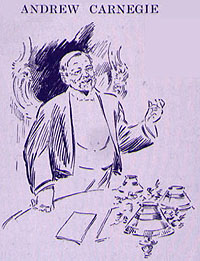

|
 ANDREW CARNEGIE said: LADIES and gentlemen, I have never been caught in a more embarrassing situation. I was just telling Miss Repplier that the chairman was referring to one party, and then I changed my mind and I said, "That's Cable," and then again I said, "It's Van Dyke." And, after all, it was my pitiful humble self. You will never believe me as a prophet again. However, I liked what Mr. Gilder said about the matter. You are the princes and princesses of the republic of letters, fitly extolling your callings. I have no right to claim any share with you. I don't wear the wedding garb, as you do, -- but from the point of view of a man of the world, those who know Mr. Clemens know what the world little suspects. Beneath all the weight of humor that has made him famous throughout the world there is a vein of the most earnest conviction, the strongest conviction underlying, that breaks forth at times. You know the original St. Mark is pictured with a lion. Sometimes our friend is a lion too, and devours everything noxious about him when he gets loose and clarifies his atmosphere. Not Juvenla, not Junius, not even Swift, has impaled a creature as he has impaled one whose name I scorn to mention. The lion annihilates what it attacks. Beware of that lion. There is another point. There comes to every man in public life a supreme moment when that determines what manner of man he is. Our friend was tried in the refineries, the purifying refineries' fire; that man went into the fiery furnace and emerged a hero. (Applause.) He stands forever with Scott; he had done everything that Scott did. Excuse me, but I must construct that vein, because whenever I think of my friend, I go deep down and think, what manner of man is this? and he is to stand in history, gentlemen and ladies, as long, perhaps longer, for the acts he has done even more than for what he has written. (Applause.) Waiting at the station this morning, Mrs. Carnegie and I saw a venerable gentleman approaching, a gentleman of eighty-five and one of the guild, Wentworth Higginson. (Applause.) We renewed old acquaintanceship, and then we told him we were taking the early train, that we would not miss this opportunity of paying this tribute to our friend if we had to get up any hour of the night; and he said: "Oh, I wish I could have accepted Colonel Harvey's invitation, but my daughters would not listen to it. I should like to be there tonight to pay my tribute to that lovable man." (Applause.) Ladies and gentlemen, traveling through this life we have all, if we are worthy of it, met a few lovable men, -- and, oh, what it means! They do not preach to you; they do not need to. They come in to see you, or you go in to see them. Their smile is a benediction. You will never leave their presence without feeling you are a better and a kinder man than when you entered; and I see around me to-night half a dozen men of whom I believe the guest of the evening would say: "Yes, they belong to this inner circle, they cheer my life, they make me better; I love them, and I know they can't help loving me." And in the passage through life -- only seventy -- why, my dear friend Wentworth is fifteen years older than you are, and I look forward to having fifteen years more with you. (Applause.) And then there is another thing I want to mention. A man like him meets with friends when he needs friends (applause); but let us pay them the tribute they deserve, as he has honored them to-night. I will cease. I would like to say more, but I won't. But I will end with this verse of a little old Scotch song. Let me see how it begins: "I'll say nae mair, but end my sang, |